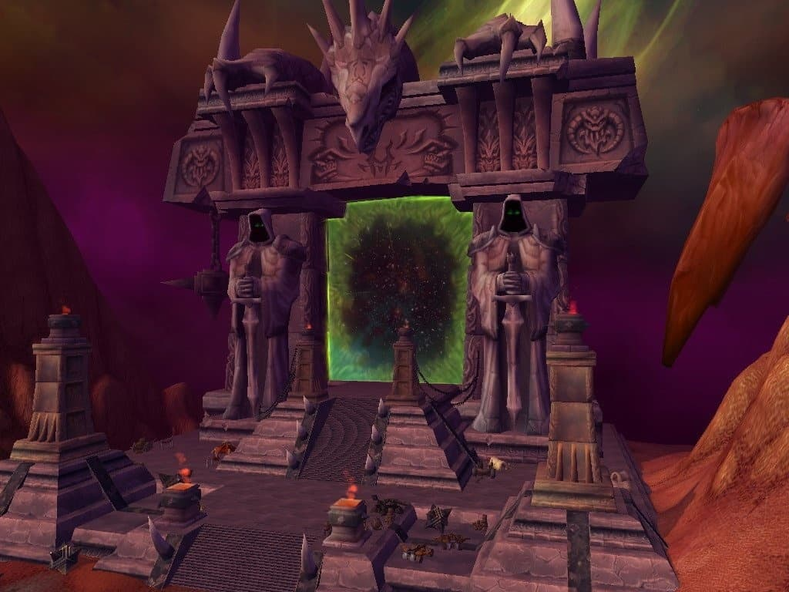
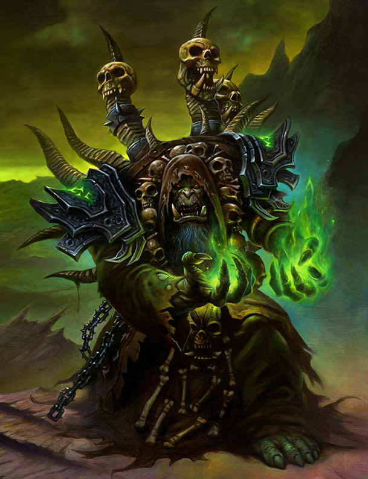
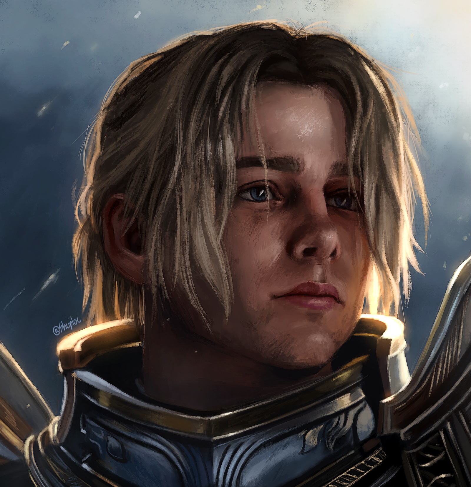
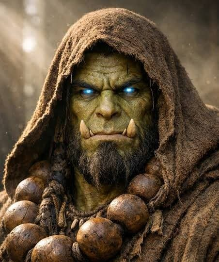
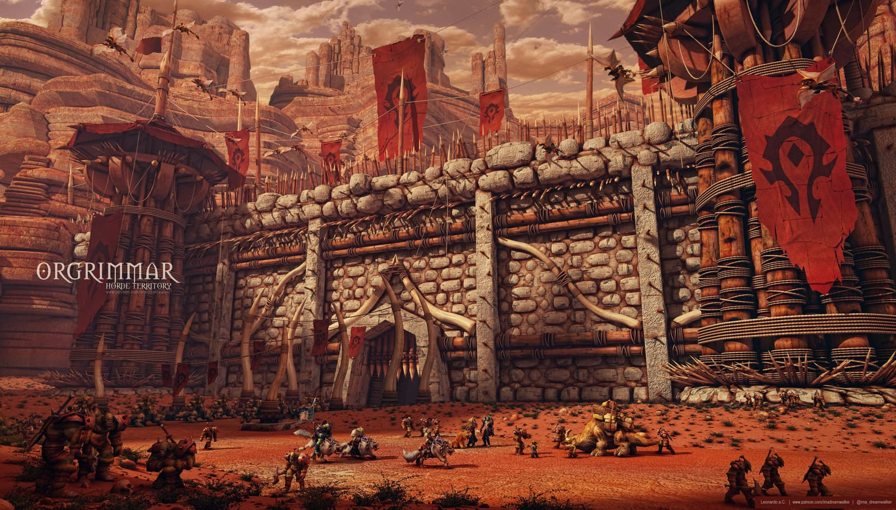
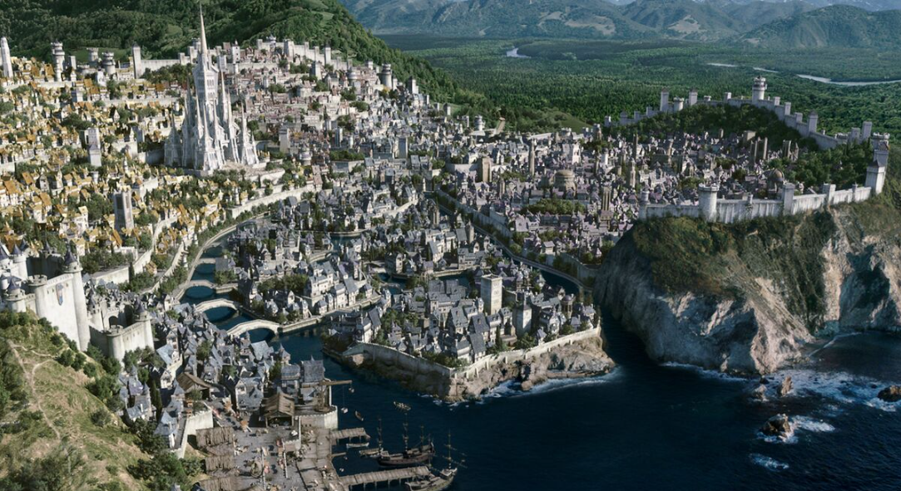
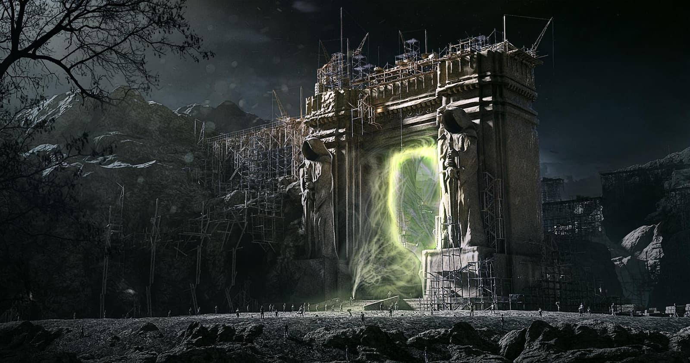

História e universo
A história de Azeroth
Conheça os acontecimentos, conflitos e personagens que moldaram o mundo de Warcraft.
Conheça os acontecimentos, conflitos e personagens que moldaram o mundo de Warcraft.
Os orcs originaram-se em Draenor, uma terra em outro universo, não em Azeroth. A corrupção pela magia fel e a manipulação da Legião Ardente transformaram muitos clãs. Feiticeiros como Gul'dan prometeram poder e abriram o Portal Negro, permitindo que os orcs chegassem a Azeroth e iniciassem as Guerras contra os reinos humanos.
O primeiro contato direto aconteceu com a abertura do Portal Negro: clãs orcs atravessaram o portal e, motivados por poder e manipulação, atacaram assentamentos humanos. A Primeira Guerra trouxe saques e a queda de importantes fortificações. Na sequência, a Segunda Guerra contou com uma Horda mais organizada comandada por senhores da guerra. Já a resistência humana, liderada por figuras como Anduin Lothar, impediu a dominação total.
As motivações dos orcs foram majoritariamente manipuladas: o fel concedeu poder imediato, mas destruiu coesão e moral. Já os humanos lutaram para defender suas casas e tradições. O choque cultural e a destruição mútua deixaram cicatrizes profundas em ambas as sociedades.

Atravessando o Portal Negro, aberto por rituais em Draenor, os orcs chegaram em ondas durante a Primeira e Segunda Guerras. A invasão foi resultado direto da corrupção por fel e das ambições de líderes orcs que buscavam poder.

Os orcs, pressionados por promessas de poder, buscavam expansão, os humanos defendiam suas terras. Manipulação, medo e mal-entendidos intensificaram a violência, produzindo heróis e vilões de ambos os lados.

Gul'dan encarnou a tentação do fel: seus pactos e rituais abriram portas que levaram os orcs a invadir outro mundo. A dependência do fel fragmentou a Horda e gerou consequências que se estenderiam por eras.
Abertura do Portal Negro, invasão inicial e perda de território humano.
Horda reorganizada com novos líderes, confronto em larga escala e eventual derrota temporária dos orcs.
Expulsão/exílio de muitos orcs, realinhamentos políticos e o começo de narrativas de redenção.
Azeroth é povoada por personagens complexos: heróis que sacrificaram tudo, líderes que cometeram erros trágicos e figuras que transitam entre a redenção e a ruína. Essas histórias pessoais dão rosto às grandes batalhas.

Após o sacrifício heróico de seu pai contra a Legião Ardente na expansão Legion, Anduin tornou-se o Alto Rei da Aliança.

Ex-escravo e xamã, transformou a Horda e buscou um caminho de honra e estabilidade para seu povo.
Das planícies de Kalimdor, onde fica localizado Ogrimmar a cidade central da Horda, às terras do Reino do leste com Vento-Bravo, cidade central da Aliança e às terras do Pantano Negro, onde o portal foi aberto entre Draenor e Azeroth — cada zona possui identidade própria, ecologia e ganchos narrativos.

Capital central dos Orcs e centro tático da Horda, governada por Rokhan, Ogrimmar é a maior cidade da Horda.

Capital do reino Humano e principal centro da Aliança, governada pelo Rei Anduin.

Local onde o Portal Negro foi aberto, dando inicio aos embates dos Orcs e Humanos, assim como a Horda e Aliança